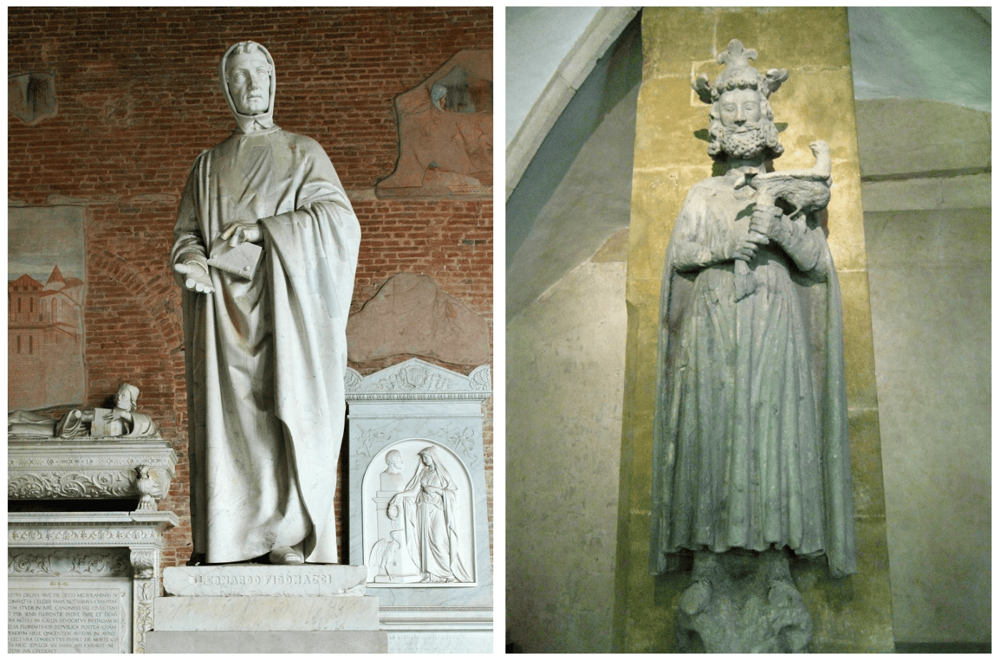
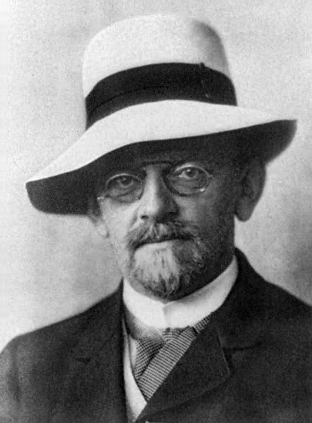
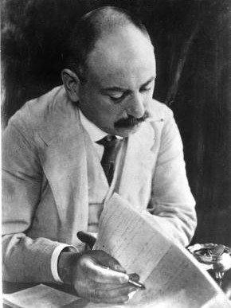

This blog post is an excerpt of a new upcoming book that I am writing. Feedback and suggestions are welcome!
In each era of the history of mathematics, there have been open problems and conjectures that mathematicians have paid particular attention to, maybe because of the intrinsic beauty of the problem, its perceived importance within an area of study, or simply put, because of the fame that a solution would bestow on the solver. At several points in time, lists of such problems have been compiled and advertised for various reasons. Such lists, as historical artifacts, serve as a snapshot of the state-of-the-art of mathematics, and the challenges themselves give us insight into the types of problems that were teasing the curious minds of the mathematicians of a given time period.
Fibonacci’s challenge
One of the first documented examples of a list of mathematical problems dates back to the year 1220 (CE). It was composed as a list of challenges to be solved by the mathematician Leonardo Pisano, who is better known nowadays by one of his nicknames: Fibonacci (see Devlin’s “The Man of Numbers” for an account of Fibonacci’s life and works). As the story goes, in 1202 Fibonacci authored Liber Abaci (Book of the Abacus), which is credited as a key text in the introduction of the Hindu-Arabic numerals to European mathematics. The book and techniques that Pisano detailed in his volume were quickly understood as a monumental advance in math and science. Within a few years, Liber Abaci had been widely praised, copied, and distributed, and the scientific advisors to the Holy Roman Emperor Frederick II became well aware of the impact of Fibonacci’s book and of the rumored unparalleled mathematical skills of its author. Thus it was high time to invite Fibonacci to join the emperor’s court. As a way to introduce Pisano, one of the scholars of the court, Johannes of Palermo, compiled a list of mathematical challenges that were presented to Leonardo, to be solved as a demonstration to the Emperor of his sophisticated mathematical knowledge.

The full list that Palermo put together is not known, but we know three of the featured problems because Fibonacci described their solutions in two of his books, Flos (Flower) and Liber Quadratorum (Book of Squares). The three challenges read as follows:
- To find a rational number such that, when 5 is added to its square, the result is the square of another rational number, and when 5 is subtracted from its square, the answer is also the square of a rational number.
- Find a number such that if it be raised to the third power, and the result added to twice the same number raised to the second power, and if that result be then increased by ten times the number, the answer is twenty.
- Three men owned a store of money, their shares being 1/2, 1/3, and 1/6. But each took some money at random until none was left. Then the first man returned 1/2 of what he had taken, the second 1/3, the third 1/6. When the money now in the pile was divided equally among the men, each possessed what he was entitled to. How much money was in the original store, and how much did each man take?
Fibonacci’s solution of the first of Palermo’s problems was 41/12. Note that
(41/12)^2 – 5 = (31/12)^2 and (41/12)^2+5 = (49/12)^2,
as required. The result is that the three squares (31/12)^2, (41/12)^2, and (49/12)^2 are in an arithmetic progression with difference 5, and we say that the three squares are congruent modulo 5. We also refer to 5 as a congruent number because such arithmetic progression of squares exists with common difference 5. One may ask (and Fibonacci indeed asked this question in his Book of Squares) what natural numbers are congruent. In other words, suppose n>0 is a natural number. Are there three square numbers a^2, b^2, and c^2 such that b^2-n=a^2 and b^2+n = c^2? For instance, n=6 is also a congruent number because (1/2)^2, (5/2)^2, and (7/2)^2 are three squares with common difference 6. Indeed, we have
(5/2)^2-6 = (1/2)^2 and (5/2)^2+6 = (7/2)^2.
The quest to characterize the set of all congruent numbers, known as the congruent number problem, is still ongoing to this day, and it has generated a large body of research, with a long list of partial and conditional results (most notably Tunnell’s criterion).
Palermo’s second problem asks for a solution of the equation x^3+2x^2+10x=20. Leonardo found an approximate solution of the equation that is correct to nine decimal places (namely, x=1.3688081075…), and expressed it in sexagesimal notation, as it was the custom at the time in precise astronomical calculations. The problem of finding a solution (or rather, an approximate solution) of a cubic polynomial equation was a problem that appeared in several Arab texts of the time. This equation in particular first appeared in Omar Khayyam’s “On proofs for problems concerning Algebra,” a text that contains the first systematic approach to solving cubic equations. The study of cubic equations would continue to be a hot topic in mathematics for a few hundred years, until the sixteenth century, when the Italian Renaissance mathematicians Cardano, Del Ferro, and Tartaglia would describe exact algebraic solutions of cubic equations.
While the third of Palermo’s problems seems to be the easiest of the three, as it only involves linear equations, it was nonetheless an interesting challenge, because there was no symbolic notation at the time and such problems were solved in a narrative form. The problem in question was very similar to other problems that Fibonacci described solutions for in his book Liber Abaci, so one suspects that this particular challenge was an opportunity for Leonardo to showcase the problem solving skills that had made him well-known in the scientific community. In modern notation, the problem asks for the following unknowns. Suppose T is the original sum of money. Let x, y, z be the amounts that each man takes from the pile, and let e be the equal amount of money that is given to each man at the end. Then 3e = x/2 + y/3 + z/6 or, equivalently, 18e = 3x+2y+z, and T = x+2e = 2y+3e = 5z+6e. After some clever manipulation, Fibonacci arrives at the smallest possible solution of this system of equation, which is T=47 and e=7, with x=33, y=13, and z=1.
Hilbert’s Problems
One might say that the current New Golden Age of Mathematics kicked off in the year 1900, during the International Congress of Mathematicians (ICM) that was held in Paris in August of that same year. One particular lecture captivated the audience at the time, and several generations of mathematicians afterwards: David Hilbert’s lecture on “Mathematical Problems.” The lecture began as follows:
Who of us would not be glad to lift the veil behind which the future lies hidden; to cast a glance at the next advances of our science and at the secrets of its development during future centuries? What particular goals will there be toward which the leading mathematical spirits of coming generations will strive? What new methods and new facts in the wide and rich field of mathematical thought will the new centuries disclose? (translated from the German by Dr. Mary Winston Newson).

Hilbert discussed 23 unsolved problems that he considered of “deep significance,” and which we will enumerate below. Undoubtedly, Hilbert’s list had a remarkable impact in the direction of mathematical research in the 20th century and, to this day, those problems in the list that are unresolved are still at the front and center of mathematical research. Certainly, many of these problems were already well-known and attractive before the year 1900, but when Hilbert called the attention to these particular questions, they became magnets for the scrutiny of mathematicians all around the world. Some of the problems were solved almost immediately. For instance, the third problem was solved by Max Dehn, a student of Hilbert, in the year 1900, with a negative answer (in fact, unbeknown to Dehn or Hilbert, the problem had been solved in 1884 by Birkenmajer!). However, many of the problems, such as the 8th problem, remain wide open and their allure still generates much research.
Here is the list of Hilbert’s 23 problems, together with a quick parenthetical remark about their status.
- The continuum hypothesis: there is no set whose cardinality is strictly between that of the integers and that of the real numbers. (Resolved in 1963.)
- Prove that the axioms of arithmetic are consistent. (Resolved in 1936.)
- Given any two polyhedra of equal volume, is it always possible to cut the first into finitely many polyhedral pieces that can be reassembled to yield the second? (Resolved in 1884 and 1900.)
- Construct all metrics where lines are geodesics. (Partial progress depending on the interpretation of the problem.)
- Are continuous groups automatically differential groups? (Resolved in 1953, but an interpretation of this problem, the Hilbert-Smith conjecture, is still open.)
- Mathematical treatment of the axioms of physics. (Partially resolved.)
- Is a^b transcendental, for an algebraic number a =/= 0,1, and an irrational algebraic number b? (Resolved in 1934.)
- Problems on Prime Numbers. These include the Riemann hypothesis, Goldbach’s conjecture, and the twin prime conjecture. (All three are unresolved.)
- Find the most general law of the reciprocity theorem in any algebraic number field. (Partially resolved.)
- Find an algorithm to determine whether a given polynomial diophantine equation with integer coefficients has an integer solution. (Resolved in 1970.)
- Solving quadratic forms with algebraic numerical coefficients. (Resolved in 1924.)
- Extend the Kronecker–Weber theorem on abelian extensions of the rational numbers to any base number field. (Unresolved.)
- Solve 7th degree equations using algebraic (variant: continuous) functions of two parameters. (Unresolved.)
- Is the ring of invariants of an algebraic group acting on a polynomial ring always finitely generated? (Resolved in 1959.)
- Rigorous foundation of Schubert’s enumerative calculus. (Partially resolved.)
- Describe relative positions of ovals originating from a real algebraic curve and as limit cycles of a polynomial vector field on the plane. (Unresolved.)
- Express a non-negative rational function as quotient of sums of squares. (Resolved in 1927.)
- (a) Is there a polyhedron that admits only an anisohedral tiling in three dimensions? (Resolved in 1928.), and
(b) What is the densest sphere packing? (Resolved in 1998.) - Are the solutions of regular problems in the calculus of variations always necessarily analytic? (Resolved in 1957.)
- Do all variational problems with certain boundary conditions have solutions? (Resolved during the course of the 20th century.)
- Proof of the existence of linear differential equations having a prescribed monodromy group. (Partially resolved.)
- Uniformization of analytic relations by means of automorphic functions. (Partially resolved.)
- Further development of the calculus of variations. (Progress.)
What were Hilbert’s criteria to select these specific problems? Certainly, there are very famous problems conspicuously missing from Hilbert’s list. For instance, Fermat’s last “theorem” (which would not be a proven theorem until much later in the 20th century) is missing. Hilbert himself addresses this issue to some extent in his essay. First, of course, not every problem could make it in one list:
The supply of problems in mathematics is inexhaustible, and as soon as one problem is solved numerous others come forth in its place. Permit me in the following, tentatively as it were, to mention particular definite problems, drawn from various branches of mathematics, from the discussion of which an advancement of science may be expected.
And second, some problems are special cases of broader mathematical programs. Such is the case of Fermat’s last theorem, which is an example of a diophantine equation, and therefore it may be considered as a special case of the challenge proposed by Hilbert’s 10th problem (notice, though, that Fermat’s equation always has trivial solutions). In addition, Hilbert gives some indication of what types of problems he was looking for when composing a list of challenges:
Moreover a mathematical problem should be difficult in order to entice us, yet not completely inaccessible, lest it mock at our efforts. It should be to us a guide post on the mazy paths to hidden truths, and ultimately a reminder of our pleasure in the successful solution.
After Hilbert, other mathematicians followed suit and created lists of their own, such as Edmund Landau, who proposed his own list in 1912.
Landau’s Problems
During the ICM of 1912, following Hilbert’s example, Edmund Landau discussed progress in our understanding of the Riemann zeta function, and then presented a list of four open problems in mathematics. In particular, his lecture concentrated on four questions that pertain to the prime numbers, two of which were already mentioned by Hilbert under his 8th challenge.

- Goldbach’s conjecture: can every even integer greater than 2 be written as the sum of two primes? (Unresolved.)
- Twin prime conjecture: are there infinitely many primes p such that p + 2 is prime? (Unresolved.)
- Legendre’s conjecture: does there always exist at least one prime between consecutive perfect squares? (Unresolved.)
- Are there infinitely many primes p such that p - 1 is a perfect square? In other words: are there infinitely many primes of the form n^2 + 1? (Unresolved.)
Landau characterized the problems in his list as “unattackable at the present state of mathematics” (see Pintz’s “Landau’s problems on primes” for a great discussion). While all four problems are still unresolved more than a hundred years after Landau’s lecture, we do have several partial results towards these questions, and a deeper understanding of the conjectures. Landau’s 2nd problem was vastly generalized by Hardy and Littlewood in 1923 in what is now known as the first Hardy–Littlewood conjecture, which quantifies the number of twin primes (and other types of prime tuples) up to a certain bound in a concrete, yet conjectural form, akin to the statement of the prime number theorem.
In 1962, Bateman and Horn stated a much broader conjecture that generalizes both Landau’s problems 2 and 4 into a single problem, subsumes the Hardy-Littlewood conjecture, and quantifies the number of primes up to a given bound that are of a specified by a definition in terms of polynomials. For example, Landau’s 4th problem asks for primes of the polynomial form n^2+1, and the twin prime conjecture asks for numbers n such that n and n+2 are both prime.
The most surprising and substantial progress towards the twin prime conjecture was a result proved in 2013 by Yitang Zhang, who proved the existence of infinitely many primes within a fixed distance of each other. The twin prime conjecture says that there are infinitely many primes that are 2 units apart, and Zhang showed that there are infinitely many pairs of primes that are less than 70 million units apart. After Zhang’s splashy result, combined efforts by a team of mathematicians (the so-called Polymath Project), and results of Maynard, showed that there are infinitely many pairs of primes that are at most 246 units apart. While this is still a far cry from the twin prime conjecture, it is quite an impressive result!
With respect to Landau’s 3rd problem, known as Legendre’s conjecture, Ingham showed in 1937 that there is a certain lower bound N such that there is at least a prime between consecutive cubes larger than N. More recently, in 2001, Baker, Harman, and Pintz showed that, for numbers n larger than a certain lower bound, there is a prime between n^2 and approximately n^2+n^(21/20), which is a bit larger than (n+1)^2=n^2+n+1, which Legendre’s conjecture predicts.
Finally, there is also significant progress towards the 1st of Landau’s problems: the Goldbach conjecture. Building on work of Vinogradov, in 1938 results of Chudakov, Van der Corput, and Estermann showed that “almost all” even numbers are the sum of two primes. Their result says, a bit more precisely, that the density of even numbers that satisfy Goldbach is 100% or, equivalently, that the counterexamples to Goldbach are very sparse within the natural numbers. Unfortunately, since their result is a density argument, one cannot rule out the existence of isolated counterexamples to the conjecture.
There are many other partial technical results toward the Goldbach conjecture, which we will not go over here, but it is worth highlighting that in 2013, Helfgott proved the so-called weak Goldbach conjecture: every odd number larger than 5 can be written as the sum of three prime numbers (which in turn implies that every even number can be written as the sum of at most four primes).
The Weil Conjectures
In 1949, André Weil proposed four conjectures that, over the course of the next two decades, would wholly revolutionize the area of algebraic geometry. The conjectures describe rather technical properties of zeta functions attached to algebraic varieties over finite fields. In particular, the four conjectures say that:
- Zeta functions are rational.
- Zeta functions satisfy a functional equation and Poincaré duality.
- Zeta functions satisfy an analog of the Riemann hypothesis.
- The degrees of the factors of a zeta function are given by Betti numbers.
Though first stated by Weil, these conjectures were a long time in the making. The first known results that are directly related to the Weil conjectures date back to Gauss (1801) and his work on what we now call Gauss sums. Much later, in 1924, the conjectures had started to take form, and an early version was stated by Emil Artin in the special case of curves (which were proved by Weil himself). Finally, Weil stated the conjectures in full generality in 1949. Although the statements naturally reside in the realm of algebraic geometry, the interest in the conjectures grew immediately because of the implied connection to a different area of mathematics (algebraic topology) via Betti numbers. The conjectural connection between areas predicted the existence of a new cohomological theory that could connect them and explain the presence of Betti numbers in the factorization of zeta functions of algebraic varieties. A flurry of mathematical activity ensued, which culminated in the discovery of étale cohomology by Artin and Grothendieck, with the purpose of attacking the conjectures. The first conjecture (rationality) was shown by Dwork in 1960, the second and forth by Grothendieck and his collaborators in 1965, and the most difficult one, the third Weil conjecture, was shown by Deligne in 1974.
Smale’s Problems
As the 20th century and a millennium closed to an end, and surely inspired by Hilbert’s highly influential list of problems, in 1998 the vice-president of the International Mathematical Union, V. I. Arnold, in 1998 wrote to a number of mathematicians with a request to collect a list of “great problems for the 21st century.” One of the recipients of the request was Steve Smale (known for his research in topology, dynamical systems and mathematical economics, and a recipient of the Fields medal in 1966), who composed a list of 18 problems for a lecture on the occasion of Arnold’s 60th birthday, and which appeared in print in his paper “Mathematical Problems for the Next Century.” In this paper, Smale explains his criteria in choosing problems:
- Simple statement. Also preferably mathematically precise, and best even with a yes or no answer.
- Personal acquaintance with the problem.
- A belief that the question, its solution, partial results or even attempts at its solution are likely to have great importance for mathematics and its development in the next century.
The list of problems was as follows:
- The Riemann hypothesis. (Unresolved.)
- The Poincaré conjecture. (Resolved in 2003.)
- P versus NP. (Unresolved.)
- Shub-Smale tau-conjecture on the integer zeros of a polynomial of one variable. (Unresolved.)
- Can one decide if a diophantine equation f(x,y) = 0 has an integer solution in exponential time? (Unresolved.)
- Is the number of relative equilibria (central configurations) finite, in the n-body problem of celestial mechanics, for any choice of positive real numbers m_1, … , m_n as the masses? (Partially resolved in 2012 for “almost all” systems of five bodies.)
- The Thomson problem on minimizing the distribution of N points on a 2-sphere. (Unresolved.)
- Extend the mathematical model of general equilibrium theory to include price adjustments. (Unresolved.)
- The linear programming problem. (Unresolved.)
- Pugh’s closing lemma. (Partially resolved in 2016.)
- Is one-dimensional dynamics generally hyperbolic? (This problem had two parts, the first part is unresolved, and the second part is resolved.)
- In other words, is the subset of all diffeomorphisms whose centralizers are trivial dense in Diff^r(M)? (Partially resolved in the C^1 topology in 2009.)
- Describe relative positions of ovals originating from a real algebraic curve and as limit cycles of a polynomial vector field on the plane (Hilbert’s 16th problem). (Unresolved.)
- Do the properties of the Lorenz attractor exhibit that of a strange attractor? (Resolved in 2002.)
- Navier-Stokes existence and smoothness. (Unresolved.)
- The jacobian conjecture. (Unresolved.)
- Solving polynomial equations in polynomial time in the average case. (Resolved in 2016.)
- Limits of intelligence regarding the fundamental problems of intelligence and learning, both from the human and machine side. (Unresolved.)
In his write-up of the mathematical problems, Smale includes three additional problems as an addenda which he describes as “a few problems that don’t seem important enough to merit a place on our main list, but it would still be nice to solve them.” The problems in question are (19) a mean value problem in complex variables, (20) is the three-sphere a minimal set?, and (21) is an Anosov diffeomorphism of a compact manifold topologically the same as the Lie group model of John Franks?
Millennium Prize Problems
Shortly after Smale’s problems were published, in 2000 the Clay Mathematics Institute of Cambridge, Massachusetts (CMI), established a list of seven problems to celebrate mathematics in the new millennium. In the words of the institute:
The Prizes were conceived to record some of the most difficult problems with which mathematicians were grappling at the turn of the second millennium; to elevate in the consciousness of the general public the fact that in mathematics, the frontier is still open and abounds in important unsolved problems; to emphasize the importance of working towards a solution of the deepest, most difficult problems; and to recognize achievement in mathematics of historical magnitude.
Known as the Millennium Prize Problems, and with a $1 million prize allocated for the solution of each problem, the seven challenges are as follows.
- The Birch and Swinnerton-Dyer conjecture. (Unresolved.)
- The Hodge conjecture. (Unresolved.)
- Navier-Stokes existence and smoothness. (Unresolved.)
- The P versus NP problem. (Unresolved.)
- The Poincaré conjecture. (Resolved in 2003.)
- The Riemann hypothesis. (Unresolved.)
- The Yang–Mills existence and mass gap. (Unresolved.)
Each problem is accompanied by a beautiful expository paper by an expert in the field, namely (1) Andrew Wiles, (2) Pierre Deligne, (3) Charles Fefferman, (4) Stephen Cook, (5) John Milnor, (6) Peter Sarnak, and (7) Michael Douglas.
The only Millennium problem that has been resolved to date is the Poincaré conjecture. Building on work of Hamilton, Grigori Perelman gave a proof in 2003, and after a thorough review of the correctness of the proof, Perelman was poised to receive both the Clay Math $1 million award, and a Fields medal. However, he rejected both awards, alleging that the prize was unfair, as he considered his contributions to be no greater than Hamilton’s.